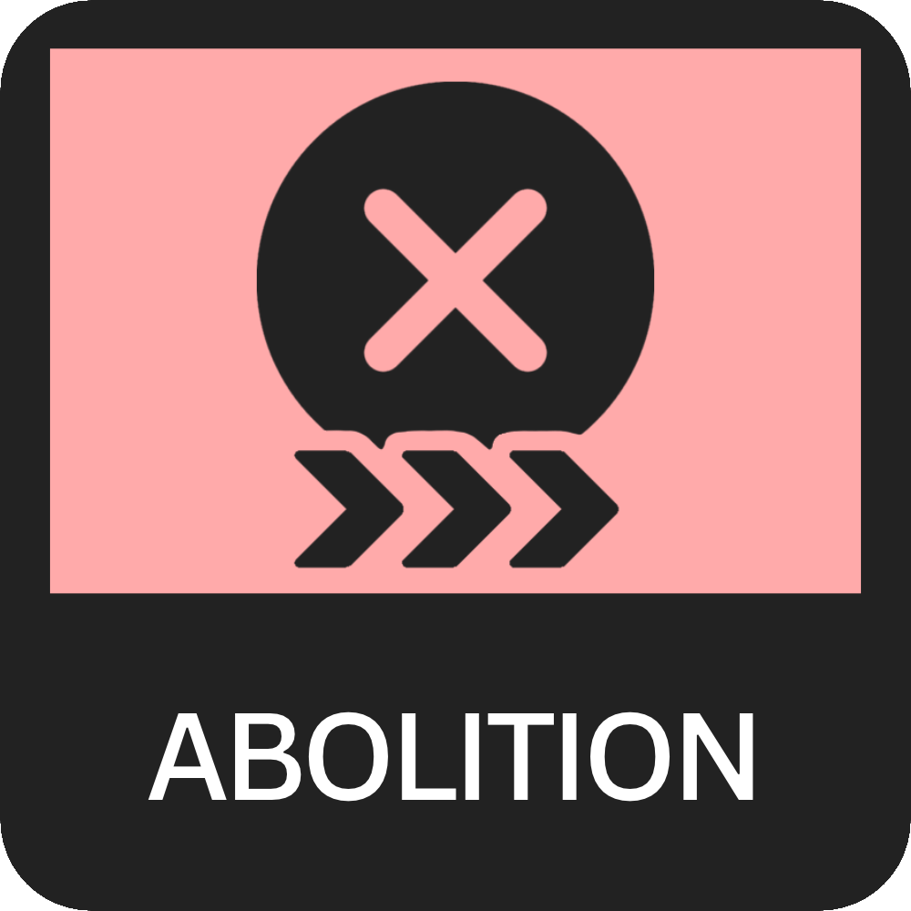
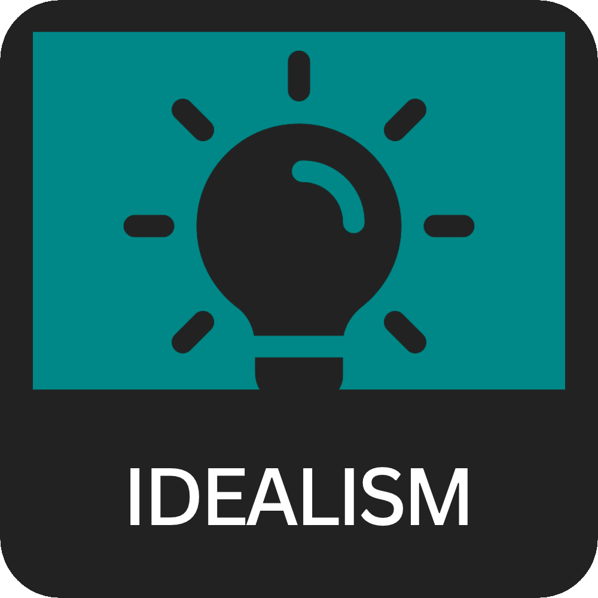

ORGANISATION
THEORY
PRAXIS
SOCIETY








AnarchistValues is, in essence, a political quiz that attempts to assign percentages along 12 axes, with a total of 24 different values. You will be presented by a statement, and then you will answer with your opinion on the statement, from Strongly Agree to Strongly Disagree, with each answer slightly affecting your scores. At the end of the quiz, your answers will be compared to the maximum possible for each value, thus giving you a percentage. Answer honestly!
There are questions in the test.
There are four independent themes - Organisation, Theory, Praxis, and Society - and each has three axes with two each representing two opposing values. They are:
ORGANISATION
PLATFORM
People with higher scores in “Platform” identify more strongly with the core principles of platformism and are more likely to advocate for a strong, unified line and clear structural processes within an anarchist organization.
UNITY
SYNTHESIS
People with higher scores in “Synthesis” believe that anarchist organizations should be more diverse and bring together multiple schools of thought. They also tend to oppose a more unified line.
DUALISM
People with higher scores in “Dualism” tend to favor an organizational separation between the masses and the revolutionaries and believe that a distinct, specifically anarchist organization is necessary.
SPECIFICITY
UNITARY
People with higher scores in “Unitary” reject a separate organization and are more in favor of uniting revolutionaries and the masses within a single mass organization. These are typically labor unions.
COORDINATION
People with higher scores in “Coordination“ believe that social change is effectively only possible through larger organizational networks that work closely together.
FEDERALISM
AUTONOMY
People with higher scores in “Autonomy“ oppose overly rigid and stringent organizational structures and see greater potential in smaller action groups, whose independence they wish to preserve.
THEORY
MATERIALISM
People with higher scores in “Materialism” view the relations of production as a central determining factor in society and believe that these significantly shape people’s ideas and actions.
PHILOSOPHY
IDEALISM
People with higher scores in “Idealism” tend to view society as a consolidation of a wide variety of individual ideas in the form of morals and ethics.
DIALECTIC
People with higher scores in “Dialectic” tend to seek to understand internal laws and contradictions, as well as to analyze where they come from and how they might develop.
METHODOLOGY
EMPIRICAL
People with higher scores in “Empirical” tend to assess circumstances based on available statistical data and ground their analysis in directly observable phenomena.
CLASS
People with higher scores in “Class” view a person’s class affiliation as more essential and, consequently, regard the currently exploited class as the revolutionary subject.
SUBJECT
IDENTITY
People with higher scores in “Identity” tend to view different forms of oppression as more equally important and assume the existence of many intersectionally intertwined subjects.
PRAXIS
REVOLUTION
People with higher scores in “Revolution” are generally opposed to parliamentary participation and are critical of a gradual path to transform society accompanied by reforms.
RADICALNESS
REFORM
People with higher scores in “Reform” tend to use parliaments, elections, and reforms as a means to an end, in order to achieve their desired vision of society step by step.
VIOLENCE
Individuals with higher scores in “Violence” are less averse to revolutionary violence and often advocate for direct armed uprisings as a means of liberation against state repressive authorities.
MILITANCY
PEACEFUL
Individuals with higher scores in “Peaceful” are more critical of violence and see in it the danger that repressive dynamics will become entrenched and reproduce forms of domination.
CAMPAIGNS
People with higher scores in “Campaigns” focus more on mass movements that form spontaneously around current issues and seek to establish themselves as a stable force within them.
FOCUS
ORGANIZING
People with higher scores in “Organizing” focus on building grassroots organizations on a community level that are as enduring and stable as possible and that operate in the fields of everyday life.
SOCIETY
ABOLITION
People with higher scores in “Abolition” view genders, sexualities, and gender roles as socially constructed and aim to abolish them along with capitalism.
GENDERS
EQUALITY
People with higher scores in “Equality” are not fundamentally opposed to genders; instead, they strive for equality among all genders and sexualities.
TECHNOLOGY
People with higher scores in “Technology” advocate for modern technology to automate production and develop the productive forces, such as robots, implants, and AI.
PROGRESS
NATURE
People with higher scores in “Nature” view technological progress critically and want to leave more tasks to humans, while placing stricter limits on the use of nature.
CENTRAL
People with higher scores in “Central” tend to believe that many decisions should be made at a higher level and that not everyone needs to make their own choice on every issue, as this is best left to experts or working groups.
STRUCTURE
LOOSE
People with higher scores in “Loose” tend to believe it is important for every person to have a say in every decision and for decisions to remain at the lowest possible level — if higher levels exist at all.
In addition to matching you to the 12 axes, the quiz also attempts to match you to a school of thought. This is a work in progress and is much less accurate than the values and axes, so don't take it too seriously. If you disagree with your assigned school, send me an issue via GitHub with your scores, matched school of thought, and preferred change, and i'll look into adjusting the system. Thanks!
¯\_(ツ)_/¯
If you have any suggestions or constructive criticism, feel free to message me on Discord (copro) or open an issue
on the GitHub page here: GitHub Page